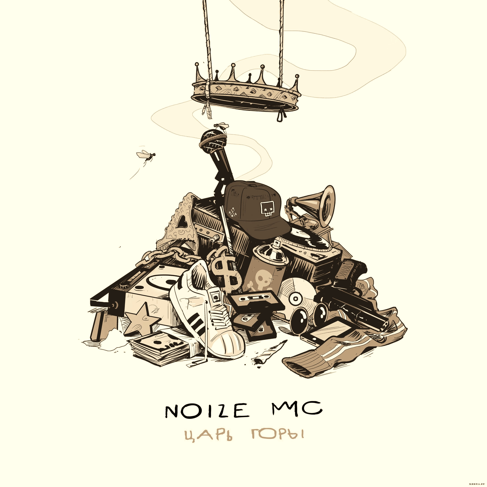
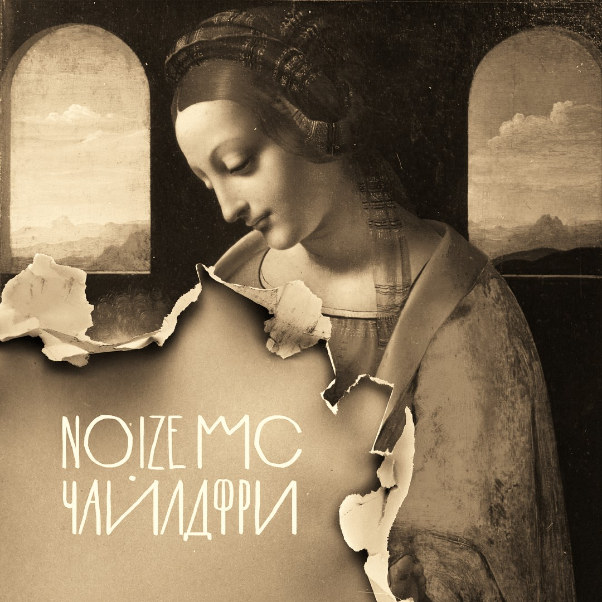

Noize MC везёт в осенний тур альбом «Царь горы»
Альбом «Царь Горы» действительно стал одним из самых ожидаемых релизов года: слухи и домыслы отно сительно материала начали распространяться фана тами в социальных сетях еще прошлогодним летом. Ожидания оправдались сполна: в 2017 году альбом «Царь горы» стал «Лучшим альбомом года» по результатам народного голосования главного рэп-ресурса The Flow и получил статус платинового альбома по количеству покупок на электронной витрине iTunes.
В альбом «Царь Горы» вошли 13 треков: это совместная работа с певицей Монеточкой «Чайлдфри», ставшей главным бэнгером альбома, «Грабли» - посленовогодний хит, взрослая история о потерянном времени, «Любимый цвет» - «Лучший трек года» по версии The Flow.
Make Some Noize MC
Громкий боевик «Make Some Noize», без которого уже никак нельзя представить выступление группы, наконец-то дождался номерного альбома, чтобы занять в его треклисте первое место. Ранее опубликованная видеоработа «Питерские крыши» — лирический аккомпанемент осени – также вошел в состав альбома.
Весь материал, вошедший в релиз, репетировали и исполняли только на концертах во время прошлого большого тура, и теперь, когда у поклонников было достаточно времени, чтобы отслушать его в студийной версии, выбрать и выучить любимые песни с альбома, фан-сообщество готово к приезду Noize MC в их родной город, чтобы подпевать любимому артисту с первой до последней песни. Каждый трек имеет персональную ассоциацию Нойза с городами и событиями, происходившими во время тура, и передает частицу воспоминаний музыканта публике.
Помимо песен с альбома «Царь горы» Noize MC обязательно включит в программу каждого концерта тура 2017 свои главные хиты нулевых: «Песня для радио», «За закрытой дверью», «Вселенная бесконечна?», «Танцi», «Устрой Дестрой», «Мое море» - что из этого попадет в треклист можно узнать, купив билет, придя на концерт и увидев воочию. За обновлениями графика тура Noize MC можно следить на официальном сайте артиста, а также в сообществе Noize MC в VK.
«Альбом «Царь горы» записывался прямо во время тура по стране – так что в рамках одного трека можно услышать гитары, записанные в Тольятти, бас из Ростова-на-Дону, клавишные из Оренбурга и винил, запиленный в Челябинске. Мы прошли путь от Сахалина до Калининграда, сыграли более 50 концертов и с гордостью представляем вам результат – релиз о том, как важно найти силы не свернуть с выбранного курса и по дороге услышать себя, а не крики с обочины»
Noize MC